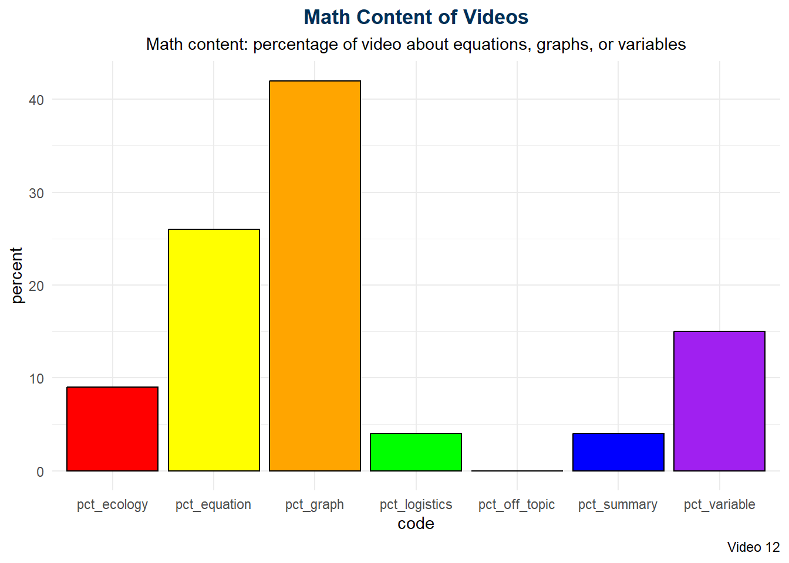
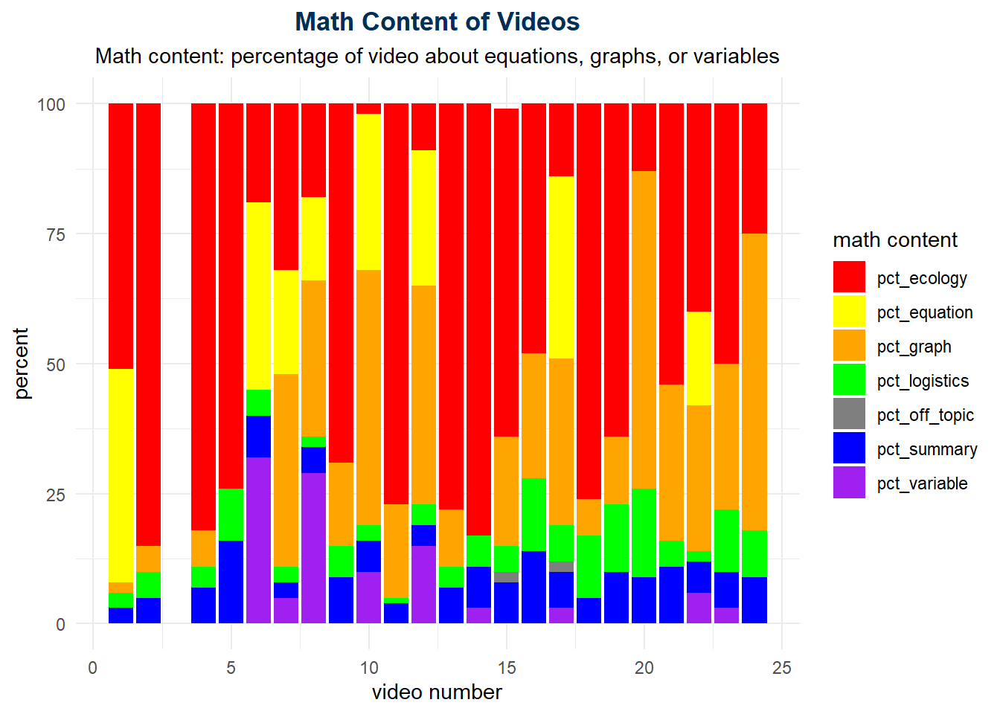

Math Biology Video Project
Derek Sollberger
- Data Analyst
- Princeton University
Dr Emily Weigel
- Course Instructor
- Georgia Tech
Math Biology Video Project
Ecology course (prereq: Intro Bio)
Fall 2018 semester
91 students (85 students in study)
24 videos
- about 10 minutes per video
Learner Profile

- mostly sophomores
- prior experience in flipped classrooms
- mostly White and Asian students
- 77 percent female
Math Content
One Video
All Videos

Literature

Math Emotion
MBVI
Math Biology Values Instrument

Discretize
We grouped students into “unchanged”, “increase”, or “decrease” groups based on their pre- and post-semester survey results for the MBVI queries on the 7-point Likert scales
Methods
Research Questions
RQ1: Which variables affected multiple views of a video?
RQ2: Which variables affected viewing duration of a video?
Machine Learning Methods
Regression
- linear regression (no penalization)
- ridge regression (L2 penalization)
- LASSO regression (L1 penalization)
K Nearest Neighbors
Random Forests
Results
RQ1: Metrics
RQ2: Metrics
RQ1: Which variables affected multiple views of a video?
Math Emotion
- moving from satisfying to frustrating
- \(\rightarrow\) more views
RQ1: Which variables affected multiple views of a video?
Math Values
More Views
- increase in intrigue
- decrease in intrigue
- decrease in essential
- decrease in appeals
- decrease in worry
Fewer Views
- increase in intimidate
- increase in fun
- decrease in intimidate
- decrease in valuable
- decrease in fun
- decrease in useful
RQ2: Which variables affected viewing duration of a video?
Math Emotion
- moving from complicated to simple
- \(\rightarrow\) shorter viewing
RQ2: Which variables affected viewing duration of a video?
Math Values
Longer Viewing
- increase in intrigue
- decrease in intrigue
- increase in fun
- decrease in interesting
- increase in valuable
- increase in work harder
Shorter Viewing
- increase in appeals
- decrease in appeals
Discussion
Message
To encourage more views or longer watching duration,
Math Emotion
- check in with students to verify how satisfying the course is
- maintain the rigor and how complicated the material is
Math Values
- allocate more intrigue in the video content
- have fun making your videos!
Thank You
Derek Sollberger
- Data Analyst
- Princeton University
- dsollberger
- @princeton.edu
Dr Emily Weigel
- Course Instructor
- Georgia Tech
- emily.weigel
- @biosci.gatech.edu
Fall 2018 Semester

Our first glance at the survey data showed no significant results between the pre and post surveys.
Video Stats
Do some students stop watching videos across term?